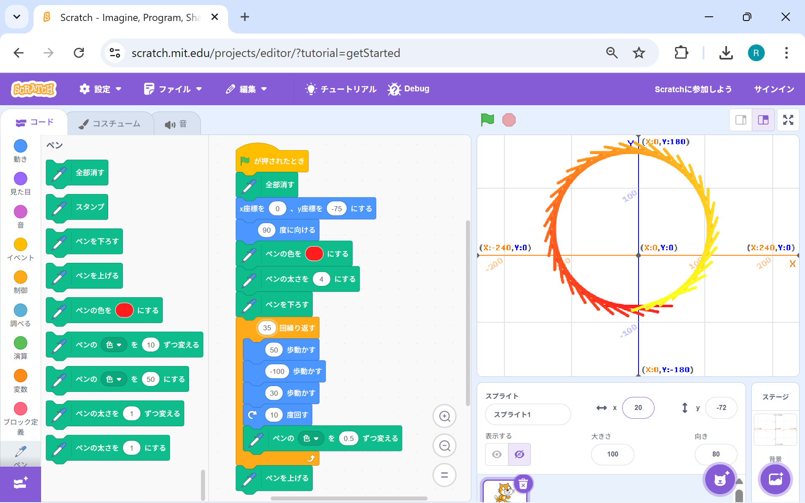
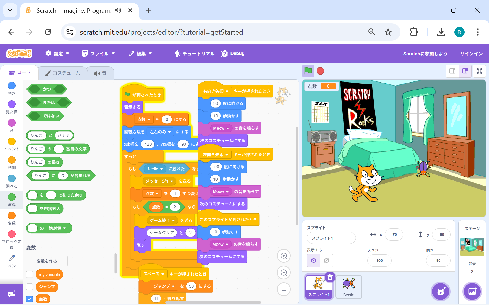

1週目のレポート ： 公大高専１年実習I-1
4b班34番 福﨑和大
第1週目
1-1 サイエンスアート

1.内容
今回の学習でスクラッチはたくさんの図形を描けるということが分かった。四角などの角が90度のものは簡単に描けることができるが、円形などの図形は直線を何度も角度を変えながら描いていき、円を表現していた。
2.感想
円形をプログラムで描く方法は理解することができたが、テキストのＡ．1-5のような図形を描く方法は難しいなと感じた。なぜかというと、大体360度になるように調整してもあのような図形は描けなかったからだ。
1-2 ゲーム

1.内容
この学習を通して学んだ内容は、プログラムを組んだら正確に動いてくれるということだ。そう思ったのは、間違えて数値を入力してもその通りに動いたからだ。
2.感想
スクラッチは簡単なプログラムだったので簡単にゲームを作れることができたが、本格的なゲームとなるとスクラッチとは比にならないぐらい難しいプログラムを組むと思うので開発者のかたはすごいなと感じた。
1-3 ホームページ作成
私のホームページ
1.内容
自分のホームページを作ってみて学んだのは、更新したことがすぐ反映されるわけではないということだ。作成していた時は4bの班のメンバーが一斉にやっていたので時間がかかったんだろうと考えた。
2.感想
自分のサイトをgithubというサイトを利用して作成したが、0から作っている人はすごいなと感じたgithubを用いず0から作成している人はどのようにwebを作成しているのかが気になった。
各ページへのリンク
1週目のレポート
2週目のレポート
3週目のレポート
私のホームページ